Trong thời đại công nghệ số, trí tuệ nhân tạo (AI) đang trở thành công cụ hỗ trợ mạnh mẽ trong học tập và làm việc. Tuy nhiên, chất lượng phản hồi của AI phụ thuộc rất lớn vào cách người dùng đặt câu lệnh (prompt). Một prompt rõ ràng, có cấu trúc và định hướng tốt sẽ giúp AI tạo ra kết quả chính xác, hữu ích và phù hợp hơn.
Báo cáo này tập trung vào việc thử nghiệm và phân tích hiệu quả của Prompt Engineering thông qua ba tác vụ học tập phổ biến:
1. Tóm tắt tài liệu học thuật.
2. Giải thích khái niệm Blockchain.
3. Tạo bộ câu hỏi trắc nghiệm AI.
Đối với mỗi tác vụ, bài báo cáo xây dựng ba mức độ prompt gồm: prompt cơ bản, prompt cải tiến và prompt nâng cao. Sau đó tiến hành thử nghiệm với AI, so sánh kết quả và phân tích lý do tại sao một số prompt mang lại hiệu quả cao hơn.
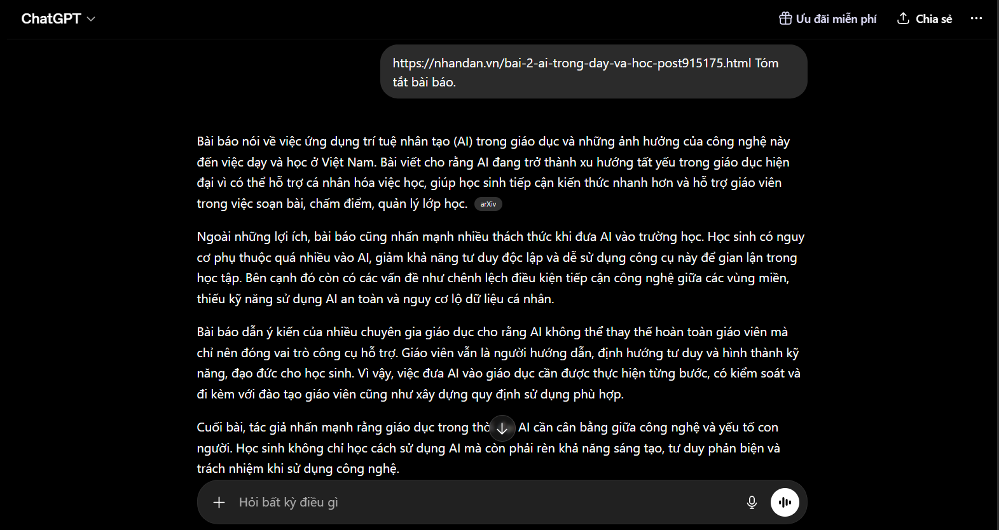
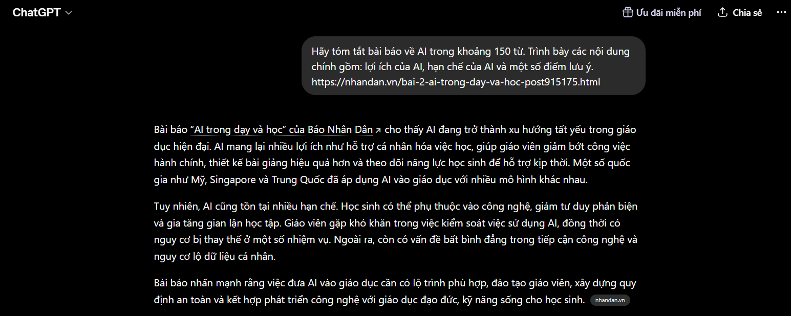
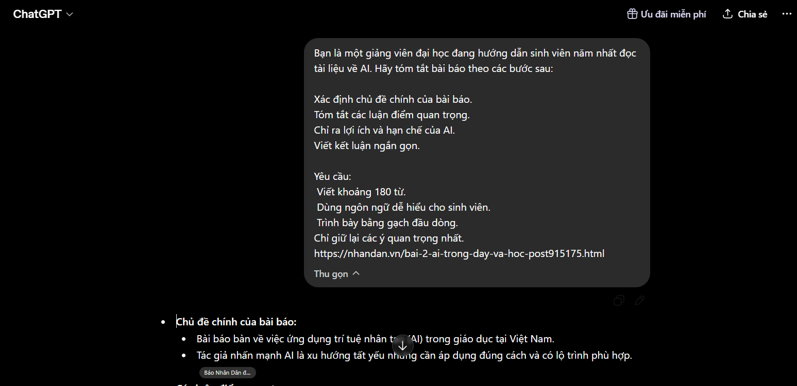
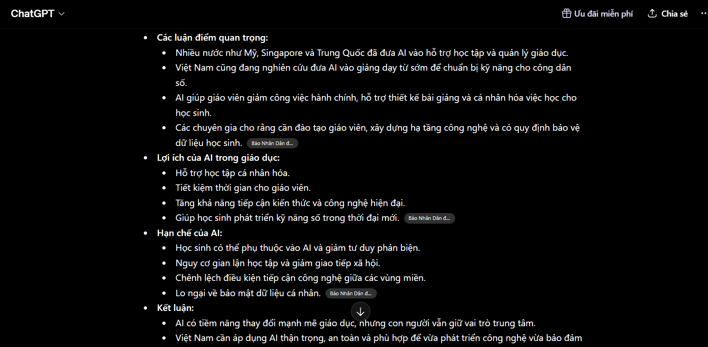
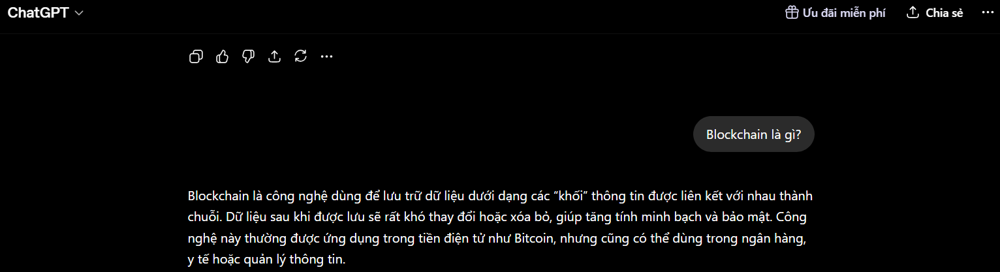
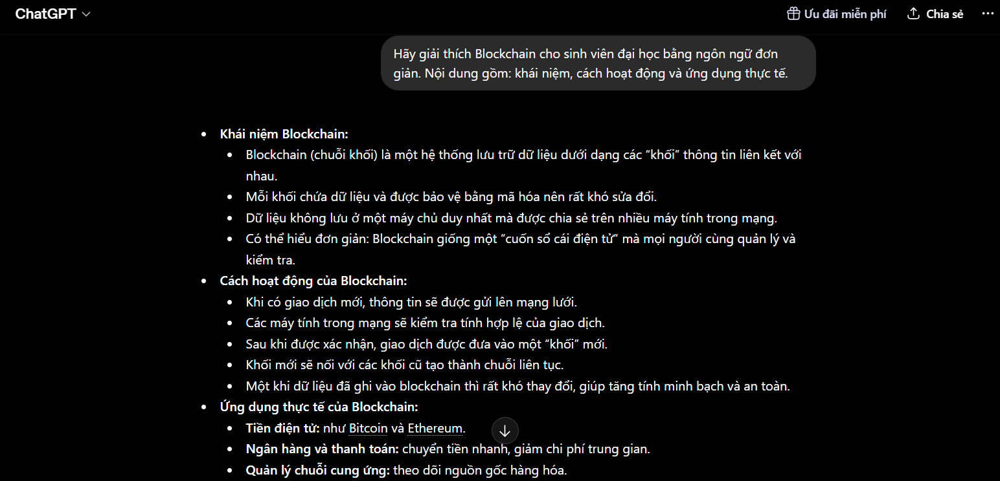
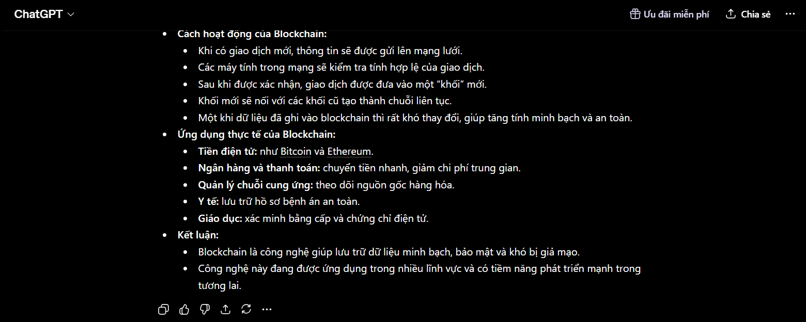
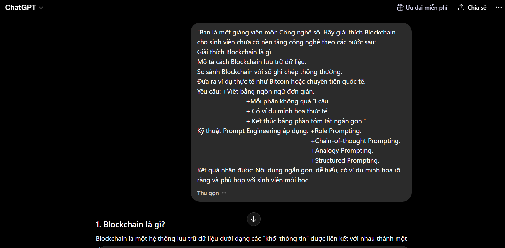
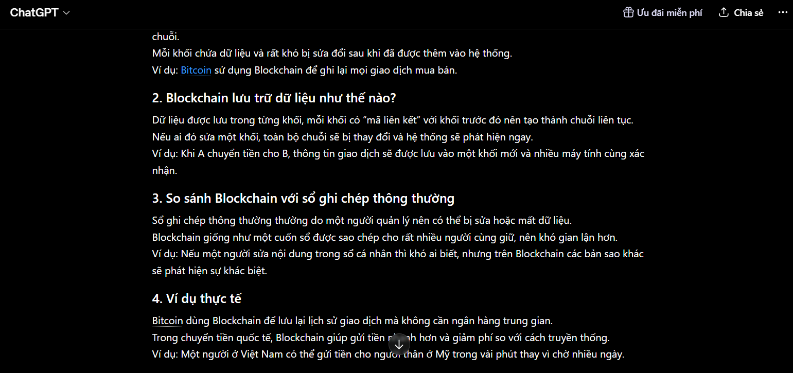
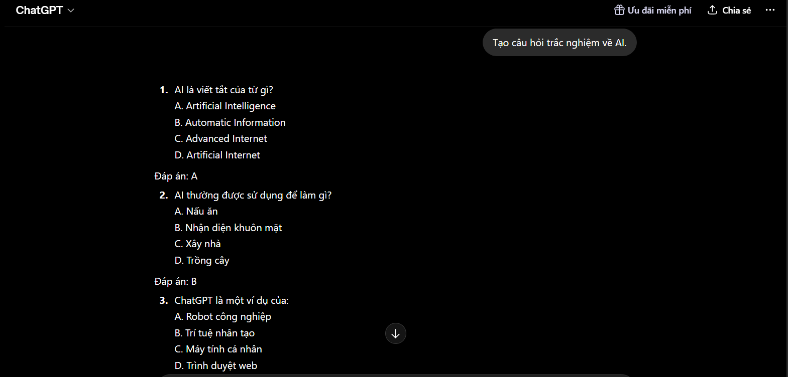
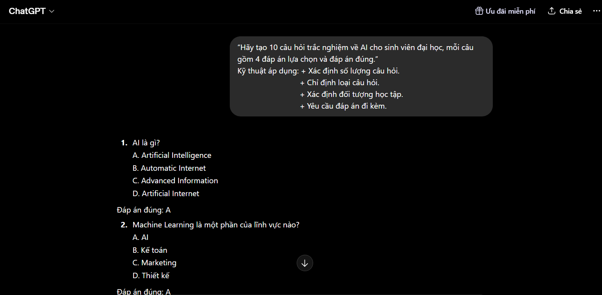
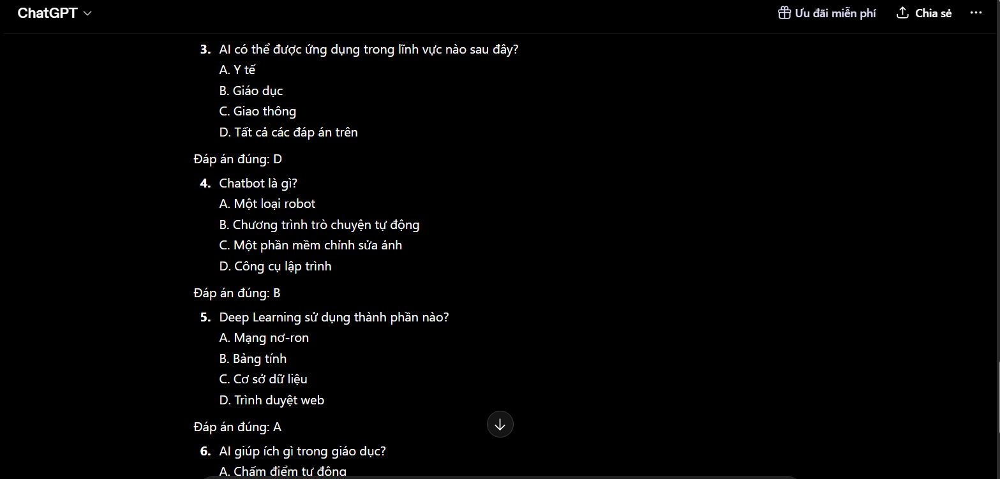
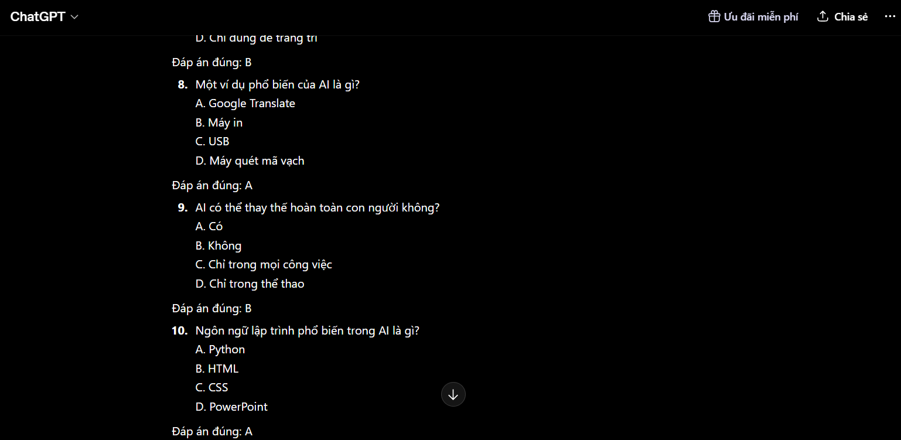
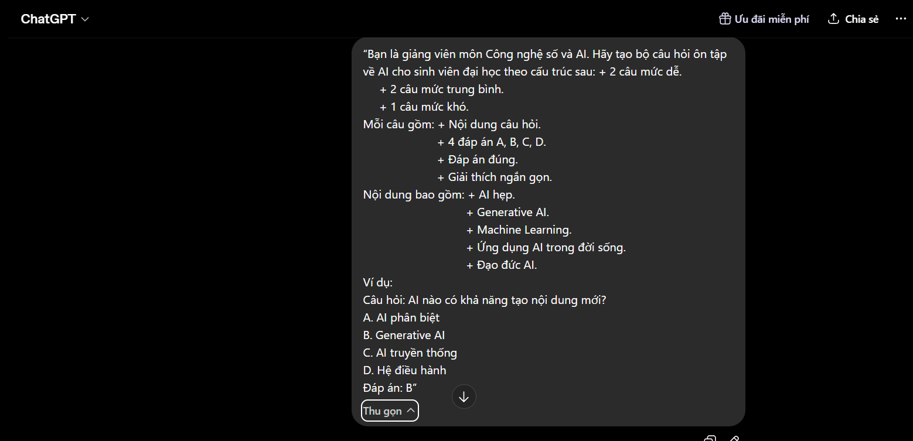
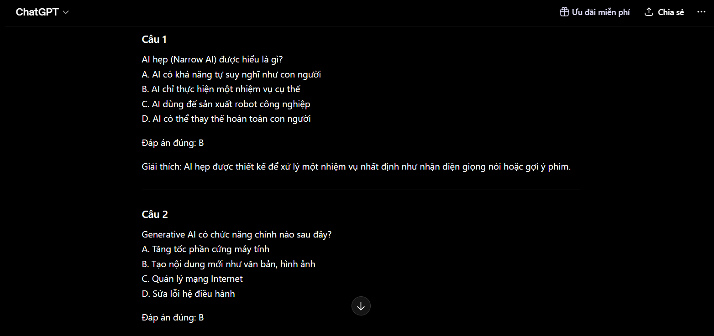
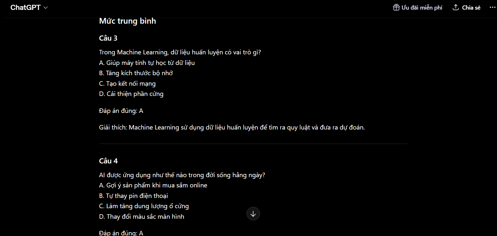
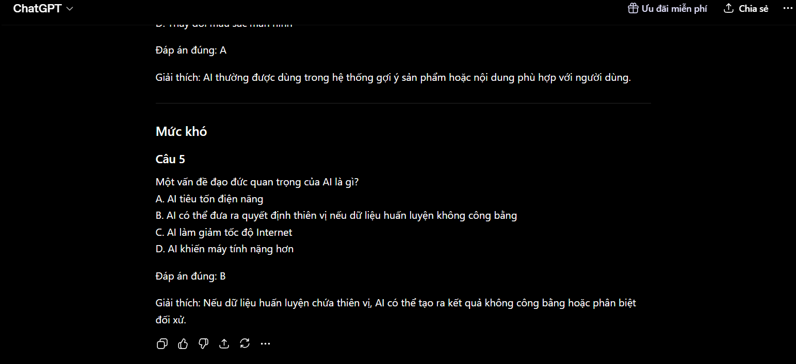
Qua quá trình thử nghiệm, prompt càng rõ ràng và có cấu trúc thì chất lượng phản hồi của AI càng tốt.
Prompt cơ bản thường quá ngắn nên AI chỉ hiểu yêu cầu ở mức chung chung. Kết quả thiếu trọng tâm, chưa đúng nhu cầu.
Prompt cải tiến đã cung cấp thêm thông tin như độ dài, đối tượng người học, cấu trúc nội dung và yêu cầu cụ thể. Kết quả rõ ràng hơn, có tính tổ chức và sát với mục tiêu học tập.
Prompt nâng cao cho kết quả tốt nhất vì áp dụng nhiều kỹ thuật Prompt Engineering như role prompting, structured prompting và constraint prompting. Khi AI được chỉ định vai trò cụ thể, phản hồi trở nên chuyên nghiệp và phù hợp hơn.